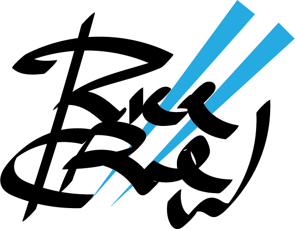

RICE Crew is the University of Rochester’s premier Asian pop dance group. Combining elements of Asian and American hip hop culture, we hope to promote the similarities and link between the two genres. We are a family committed to utilizing our passion for the art of dance to inspire and cross all boundaries within diverse communities through artistic expression, humility, constant growth, and respect for all people.
RICE Crew was founded at the University of Rochester in the fall of 2010 by Jason Tan ’11, Deborah Youn ’12, Alexandra Xuechen Bao ’12, Teresa Yung ’12, and Mabel Lim ’12. It was founded with the purpose of bringing people together at the University to dance to American, Korean, and other Asian pop songs. The name RICE was created in Gleason library, which was an acronym for Rochester International Chorography and Entertainment. The first task the founders had to do was recruit new members at the activities fair. The founders thought it would be a good idea to dress up as Korean drama high school students and walk around the fair handing out flyers for the first practice. After almost getting thrown out of the fair by the SA student government, the founders were able to recruit a few new members.
The club eventually grew to more members and their popularity on campus also began to grow. During their first year of operation, RICE performed at CSA’s Mid-Autumn Festival, Vice and Virtue, DU Dance Competition, CSA's China Night, a basketball game, KASA's Korea Night, Asian Night Market, and the Senior Farwell Concert. In the fall of 2012, RICE won 2nd place in the DU Dance Competition. In the spring of 2012, RICE guest performed for ABDC Finalists Instant Noodle Crew when they came to the U of R to give a performance. Though the founders have all graduated already and parted ways, their vision of creating a dancing family has been passed down to the next generation who continue to write a new chapter in RICE’s history.
Check out what RICE was like back in the day
RICE Crew First Generation from Rice Crew on Vimeo.